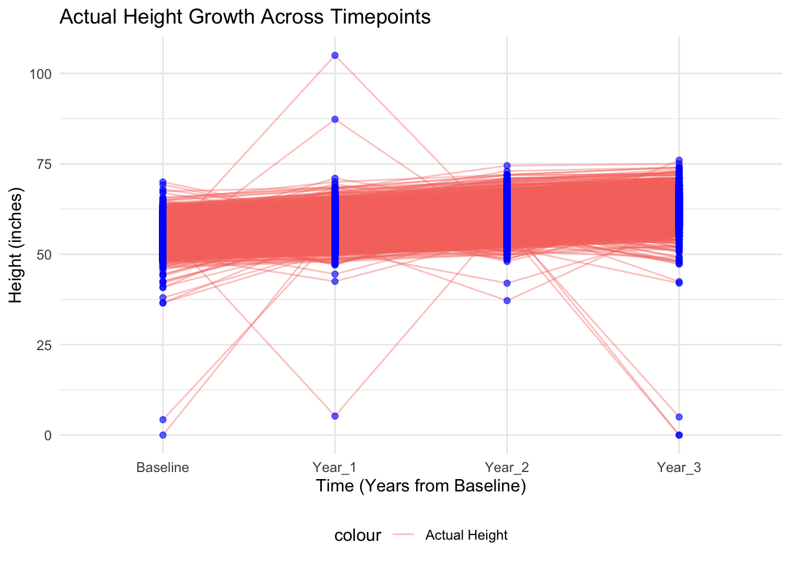

Latent Growth Curve Models
Overview
Latent growth curve models (LGCM) are an analytical tool within the framework of structural equation modeling that enable the examination of change over time. This model type effectively separates the true trajectory of a variable from random measurement error, allowing for the estimation of an underlying growth process. The primary components of LGCM include the intercept, which represents the initial status, and the slope, which reflects the rate of change over time.
This example investigates a growth trajectory of participant’s height, measured across 4 annual assessments in participants from the ABCD Study. Fitting the latent growth curve model will allow for an examination of the initial status (intercept) and rate of change (slope) of height from baseline through successive yearly follow-ups. Each participant’s height trajectory is modeled to capture both the starting point and the growth pattern over time. The results are illustrated through growth plots that demonstrate the mean trajectory across the cohort, along with the variability in growth rates among individuals, providing insights into the developmental patterns of height over time.
Preliminary Setup
Load Packages
Descriptives
Code
descriptives_table <- df_long %>%
select(event, height) %>%
mutate(event = factor(event)) %>%
tbl_summary(
by = event,
missing = "no",
label = list(height ~ "Height"),
statistic = list(all_continuous() ~ "{mean} ({sd}) )", all_categorical() ~ "{p}%"),
) %>%
modify_header(all_stat_cols() ~ "**{level}**<br>N = {n}") %>%
bold_labels() %>%
italicize_levels() %>%
modify_spanning_header(all_stat_cols() ~ "**Assessment Wave**")
theme_gtsummary_compact()
descriptives_table| Characteristic | Assessment Wave | |||
|---|---|---|---|---|
| Baseline N = 28181 |
Year_1 N = 28181 |
Year_2 N = 28181 |
Year_3 N = 28181 |
|
| Height | 55.1 (3.6) ) | 57.5 (3.7) ) | 60.3 (3.6) ) | 62.3 (4.1) ) |
| 1 Mean (SD) ) | ||||
Results
Compute Latent Growth Curve Model
The code below is used to compute a growth curve model to investigate changes in height across four annual assessments. This statistical approach provides insights into how much individuals vary around the average trajectory and the consistency of their growth patterns across time. This model estimates an overall intercept, representing the initial status, and a slope that captures the rate of growth across time points.
Code
# Reshape data from long to wide format
df_wide <- df_long %>%
pivot_wider(
id_cols = c(id),
names_from = event,
values_from = height,
names_prefix = "Height_"
)
df_wide <- na.omit(df_wide)
model <- " i =~ 1*Height_Baseline + 1*Height_Year_1 + 1*Height_Year_2 + 1*Height_Year_3
s =~ 0*Height_Baseline + 1*Height_Year_1 + 2*Height_Year_2 + 3*Height_Year_3
# Intercept and slope variances
i ~~ i
s ~~ s
# Residual variances for each observed variable
Height_Baseline ~~ var_baseline*Height_Baseline
Height_Year_1 ~~ var_year1*Height_Year_1
Height_Year_2 ~~ var_year2*Height_Year_2
Height_Year_3 ~~ var_year3*Height_Year_3
"
fit <- growth(model, data = df_wide)
summary(fit)lavaan 0.6.16 ended normally after 97 iterations
Estimator ML
Optimization method NLMINB
Number of model parameters 9
Number of observations 2818
Model Test User Model:
Test statistic 126.998
Degrees of freedom 5
P-value (Chi-square) 0.000
Parameter Estimates:
Standard errors Standard
Information Expected
Information saturated (h1) model Structured
Latent Variables:
Estimate Std.Err z-value P(>|z|)
i =~
Height_Baselin 1.000
Height_Year_1 1.000
Height_Year_2 1.000
Height_Year_3 1.000
s =~
Height_Baselin 0.000
Height_Year_1 1.000
Height_Year_2 2.000
Height_Year_3 3.000
Covariances:
Estimate Std.Err z-value P(>|z|)
i ~~
s -0.118 0.089 -1.319 0.187
Intercepts:
Estimate Std.Err z-value P(>|z|)
.Height_Baselin 0.000
.Height_Year_1 0.000
.Height_Year_2 0.000
.Height_Year_3 0.000
i 55.157 0.065 846.256 0.000
s 2.491 0.020 122.967 0.000
Variances:
Estimate Std.Err z-value P(>|z|)
i 9.391 0.334 28.080 0.000
s 0.310 0.040 7.697 0.000
.Hght_Bs (vr_b) 3.489 0.182 19.214 0.000
.Hgh_Y_1 (vr_1) 3.870 0.132 29.282 0.000
.Hgh_Y_2 (vr_2) 2.089 0.100 20.972 0.000
.Hgh_Y_3 (vr_3) 6.297 0.234 26.963 0.000The results from the latent growth curve analysis show an increasing pattern of mean change in participant’s height across assessments (slope = 2.491, p<.001). In addition, the model identified significant variability in both the intercept (estimate = 9.39, se=.33, p<.001), which represents initial height and the slope (estimate = .31, se=.04, p<.001), which measures growth over time. This indicates substantial differences in starting heights and growth rates among individuals. The covariance between the intercept and slope was not statistically significant (estimate = -.11, p = .18), suggesting initial height does not influence the rate of growth.
Model Plots
Code
# Plotting the height data over time from the df_long dataframe
ggplot(df_long, aes(x = event, y = height, group = id)) +
geom_line(alpha = 0.4, aes(color = "Actual Height"), size = 0.5) + # Lines to connect data points for each participant
geom_point(alpha = 0.6, color = "blue") + # Points for actual heights
scale_x_discrete(limits = c("Baseline", "Year_1", "Year_2", "Year_3")) + # Ensuring the order of events
labs(
title = "Actual Height Growth Across Timepoints",
x = "Time (Years from Baseline)",
y = "Height (inches)"
) +
theme_minimal() +
theme(legend.position = "bottom") # Adjust legend position
This plot visualizes the height trajectories across four annual timepoints. Each line represents an individual participant’s height trajectory showing overall trends while maintaining focus on individual variations. Blue points mark the actual height measurements at each timepoint, providing a clear view of the data distribution and growth patterns over time. This graph highlights both the general trend of increasing height and the individual differences in growth rates among participants.
Wrapping Up
This analysis employed a latent growth curve model (LGCM) framework to examine participants’ heights across multiple assessment points. Results revealed an increasing trend in average height changes over time, with a slope parameter of 2.49 (p<.001), indicating a steady growth across all assessments. Significant variability was observed both in the intercept, with an estimate of 9.39 (se = .33, p<.001), representing the initial height, and in the slope, with an estimate of .31 (se = .04, p<.001), which measures growth over time. This highlights notable individual differences in starting heights and growth rates. Furthermore, the lack of a statistically significant covariance between the intercept and slope (estimate = -.11, p = .18) suggests that the initial height does not influence subsequent growth rates.
Latent growth curve modeling provides a powerful tool for evaluating patterns of growth, allowing for the differentiation between average growth trajectories and individual variability. This method is able to parse out complex relationships, underscoring its utility in longitudinal data analysis, enhancing our interpretation of how individuals change over time.